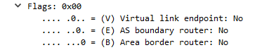
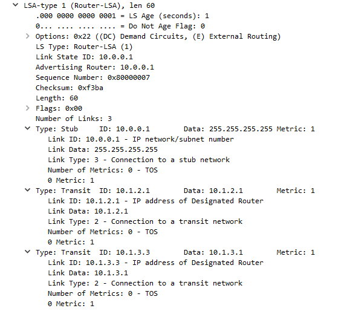
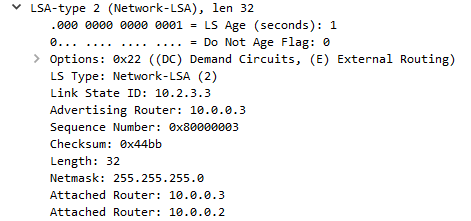
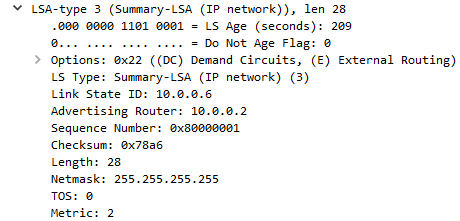
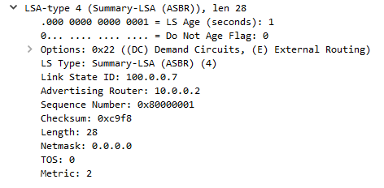
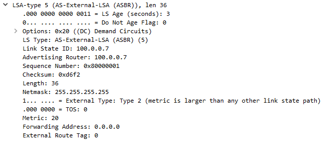
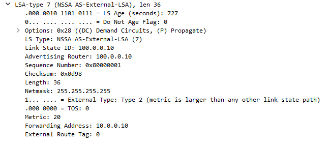

Basic OSPF
03 Oct 2017Содержание
OSPF - Link-State протокол маршрутизации (для inter-area характерно поведение Distance Vector протоколов).
Использует алгоритм Дейкстры для поиска кратчайшего пути к вершинам графа от исходной вершины (от маршрутизатора, совершающего расчет, к остальным маршрутизаторам, участвующим в процессе OSPF).
Основной RFC по OSPFv2 - RFC 2328.
Типы пакетов OSPF
Существует 5 типов пакетов OSPF:
- Hello
- Database Description
- Link State Request
- Link State Update
- Link State Acknowledgment
Общий заголовок для всех типов пакетов:
0 1 2 3
0 1 2 3 4 5 6 7 8 9 0 1 2 3 4 5 6 7 8 9 0 1 2 3 4 5 6 7 8 9 0 1
+-+-+-+-+-+-+-+-+-+-+-+-+-+-+-+-+-+-+-+-+-+-+-+-+-+-+-+-+-+-+-+-+
| Version # | Type | Packet length |
+-+-+-+-+-+-+-+-+-+-+-+-+-+-+-+-+-+-+-+-+-+-+-+-+-+-+-+-+-+-+-+-+
| Router ID |
+-+-+-+-+-+-+-+-+-+-+-+-+-+-+-+-+-+-+-+-+-+-+-+-+-+-+-+-+-+-+-+-+
| Area ID |
+-+-+-+-+-+-+-+-+-+-+-+-+-+-+-+-+-+-+-+-+-+-+-+-+-+-+-+-+-+-+-+-+
| Checksum | AuType |
+-+-+-+-+-+-+-+-+-+-+-+-+-+-+-+-+-+-+-+-+-+-+-+-+-+-+-+-+-+-+-+-+
| Authentication |
+-+-+-+-+-+-+-+-+-+-+-+-+-+-+-+-+-+-+-+-+-+-+-+-+-+-+-+-+-+-+-+-+
| Authentication |
+-+-+-+-+-+-+-+-+-+-+-+-+-+-+-+-+-+-+-+-+-+-+-+-+-+-+-+-+-+-+-+-+
Hello
Пакет, периодически рассылающийся через все интерфейсы для установления и поддержки отношений соседства. Период рассылки устанавливается параметром HelloInterval.
Database Description (DBD)
Пакет, содержащий описание LSDB маршрутизаторов. Первый DBD пакет отправляется master маршрутизатором, в ответ от slave маршрутизатора приходит DBD с аналогичным sequence number, расцениваемый как acknowledge.
Link State Request (LSR)
Пакет используется после синхронизации LSDB между маршрутизаторами для запроса отдельных LSA.
Link State Update (LSU)
Пакеты подобного типа используются для ответа на LSR (unicast destination), либо для распространения новых LSA (224.0.0.5 multicast destination). Содержат полное описание LSA.
Link State Acknowledge (LSAck)
LSAck отправляются в качестве подтверждения для полученных LSA (LSU). Существует два типа LSAck:
- Пакеты отправляются сразу после получения LSU на unicast адрес отправителя;
- Пакеты отправляются с некоторой задержкой на multicast адрес.
Типы LSA (Link-State Advertisement)
LSA Type 1
Router-LSAs - описывают набор интерфейсов каждого маршрутизатора в area. Распространяются только внутри area. Также содержат описание роли маршрутизатора:
- Bit V установлен - маршрутизатор терминирует Virtual-Links, для которых area, где сгенерирован LSA, выступает в качестве транзитной;
- Bit E установлен - ASBR;
- Bit B установлен - ABR. 
Таблица возможных типов Link ID (RFC 2328):
Link type Description Link ID
__________________________________________________
1 Point-to-point Neighbor Router ID
link
2 Link to transit Interface address of
network Designated Router
3 Link to stub IP network number
network
4 Virtual link Neighbor Router ID
Link-State ID для LSA Type 1 - Router ID.
Пример Router-LSA:
vIOS1#sh ip ospf database router 10.0.0.1
OSPF Router with ID (10.0.0.1) (Process ID 1)
Router Link States (Area 0)
LS age: 533
Options: (No TOS-capability, DC)
LS Type: Router Links
Link State ID: 10.0.0.1
Advertising Router: 10.0.0.1
LS Seq Number: 80000004
Checksum: 0xB5FD
Length: 60
Number of Links: 3
Link connected to: a Stub Network
(Link ID) Network/subnet number: 10.0.0.1
(Link Data) Network Mask: 255.255.255.255
Number of MTID metrics: 0
TOS 0 Metrics: 1
Link connected to: a Transit Network
(Link ID) Designated Router address: 10.1.2.1
(Link Data) Router Interface address: 10.1.2.1
Number of MTID metrics: 0
TOS 0 Metrics: 1
Link connected to: a Transit Network
(Link ID) Designated Router address: 10.1.3.1
(Link Data) Router Interface address: 10.1.3.1
Number of MTID metrics: 0
TOS 0 Metrics: 1
LSA Type 1 в дампе пакета LS Update: 
LSA Type 2
Network-LSAs - содержат описание маршрутизаторов, присоединенных к определенной сети. Рассылаются DR внутри area в broadcast и NBMA сетях. Генерируются для каждой транзитной (Type 2 в Router-LSA) сети.
Link-State ID для LSA Type 2 - адрес DR.
Пример Network-LSA:
vIOS2#sh ip ospf database network 10.2.3.3
OSPF Router with ID (10.0.0.2) (Process ID 1)
Net Link States (Area 0)
LS age: 68
Options: (No TOS-capability, DC)
LS Type: Network Links
Link State ID: 10.2.3.3 (address of Designated Router)
Advertising Router: 10.0.0.3
LS Seq Number: 80000003
Checksum: 0x44BB
Length: 32
Network Mask: /24
Attached Router: 10.0.0.3
Attached Router: 10.0.0.2
LSA Type 2 в дампе пакета LS Update: 
LSA Type 3
Summary-LSAs - содержат описание маршрутов в другие area. Рассылаются ABR внутри area. В backbone area с ABR анонсируются только intra-area маршруты, в non-backbone area с ABR анонсируются как intra-area, так и inter-area маршруты.
При получении LSA Type 3 маршрутизатором, алгоритм SPF не запускается, стоимость маршрута указанного в LSA добавляется к стоимости маршрута до ABR.
Link-State ID для LSA Type 3 - адрес сети, описанной в LSA.
Пример Summary-LSA:
vIOS1#sh ip ospf database summary 10.0.0.6
OSPF Router with ID (10.0.0.1) (Process ID 1)
Summary Net Link States (Area 0)
LS age: 44
Options: (No TOS-capability, DC, Upward)
LS Type: Summary Links(Network)
Link State ID: 10.0.0.6 (summary Network Number)
Advertising Router: 10.0.0.2
LS Seq Number: 80000001
Checksum: 0x78A6
Length: 28
Network Mask: /32
MTID: 0 Metric: 2
LSA Type 3 в дампе пакета LS Update: 
LSA Type 4
ASBR-summary-LSAs - содержат адрес ASBR, находящегося в другой area. Рассылаются ABR внутри area.
Link-State ID для LSA Type 4 - router ID описанного в LSA ASBR.
Пример ASBR-summary-LSA:
vIOS1#sh ip ospf data asbr-summary 100.0.0.7
OSPF Router with ID (10.0.0.1) (Process ID 1)
Summary ASB Link States (Area 0)
LS age: 64
Options: (No TOS-capability, DC, Upward)
LS Type: Summary Links(AS Boundary Router)
Link State ID: 100.0.0.7 (AS Boundary Router address)
Advertising Router: 10.0.0.2
LS Seq Number: 80000001
Checksum: 0xC9F8
Length: 28
Network Mask: /0
MTID: 0 Metric: 2
LSA Type 4 в дампе пакета LS Update: 
LSA Type 5
AS-external-LSAs - содержат описание маршрутов, внешних по отношению к автономной системе (домену OSPF). Рассылаются ASBR по всей автономной системе (домену OSPF), исключая stub area’s. Также содержит следующие атрибуты:
External Type Bit - определяет тип external маршрута. Если бит не установлен - маршрут имеет тип E1, и к стоимости перераспределения прибавляется стоимость каналов до ASBR. Если бит установлен - маршрут имеет тип E2 и учитывается только стоимость перераспределения.
Маршрут типа E1 при прочих равных (метрика может быть различной) имеет больший приоритет, чем маршрут типа E2. Если у маршрутизатора есть два одинаковых E2 маршрута от разных ASBR, в выборе лучшего будет учитываться метрика до самих ASBR.
Forwarding Address - указывает через какой адрес доступен целевой маршрут. В случае, если данный маршрут доступен через самого ASBR в поле Forwarding Address указывается значение 0.0.0.0.
Отличный от 0.0.0.0 Forwarding Address должен находиться в пределах автономной системы (домена OSPF).
Link-State ID для LSA Type 5 - адрес сети, описанной в LSA.
Пример AS-external-LSAs:
vIOS1#sh ip ospf database external 100.0.0.7
OSPF Router with ID (10.0.0.1) (Process ID 1)
Type-5 AS External Link States
LS age: 245
Options: (No TOS-capability, DC, Upward)
LS Type: AS External Link
Link State ID: 100.0.0.7 (External Network Number )
Advertising Router: 100.0.0.7
LS Seq Number: 80000002
Checksum: 0xD4F3
Length: 36
Network Mask: /32
Metric Type: 2 (Larger than any link state path)
MTID: 0
Metric: 20
Forward Address: 0.0.0.0
External Route Tag: 0
LSA Type 5 в дампе пакета LS Update: 
LSA Type 7
NSSA-external-LSAs. Описаны в RFC 3101. Содержат информацию о внешних маршрутах с ASBR, расположенного в NSSA. Рассылаются ASBR в пределах NSSA.
На ABR, граничащем с NSSA, происходит трансформация LSA Type 7 -> LSA Type 5. Маршрут по умолчанию, при его анонсе с ABR в NSSA, также имеет Type 7.
Следует учитывать, что ABR в NSSA не генерируют Type 4 LSA для NSSA ASBR, так как LSA Type 7 не распространяются за пределы NSSA.
Таким образом, для того, чтобы ASBR в NSSA был доступен из других area, поле Forwarding Address в LSA Type 7 должно быть не равным 0.0.0.0 (может быть 0.0.0.0, если P-bit не выставлен). ABR копирует значение данного поля из LSA Type 7 в LSA Type 5 (если Forwarding Adress равен 0.0.0.0, трансляции LSA Type 7 -> LSA Type 5 не происходит).
LSA Type 7 содержит следующую дополнительную информацию:
- P-bit (Propagate) - указывает на то, должен ли LSA Type 7 быть преобразован на ABR в LSA Type 5 и распространен в остальные area.
Пример NSSA-external-LSA:
vIOS1#sh ip ospf database nssa-external 100.0.0.10
OSPF Router with ID (10.0.0.1) (Process ID 1)
Type-7 AS External Link States (Area 1910)
LS age: 464
Options: (No TOS-capability, Type 7/5 translation, DC, Upward)
LS Type: AS External Link
Link State ID: 100.0.0.10 (External Network Number )
Advertising Router: 100.0.0.10
LS Seq Number: 80000001
Checksum: 0xD98
Length: 36
Network Mask: /32
Metric Type: 2 (Larger than any link state path)
MTID: 0
Metric: 20
Forward Address: 10.0.0.10
External Route Tag: 0
LSA Type 7 в дампе пакета LS Update: 
Типы area
Backbone area
Area 0.0.0.0. Все ABR находятся в backbone area. Также она отвечает за пересылку маршрутной информации между non-backbone area. Должна быть логически непрерывной (допускается использование virtual-links).
Standard area
Стандартная area, не являющаяся backbone. При наличии в топологии только одной area - ее номер потенциально может быть любым (так как пересылка информации между area отсутствует).
Stub area
Area, в которую запрещено распространение LSA Type 5. При этом на ABR внутрь area генерируется LSA Type 3 с маршрутом по умолчанию. Принадлежность к stub area должна быть включена на всех маршрутизаторах, входящих в данную area. Не может содержать ASBR. Сообщение при попытке сделать один из маршрутизаторов в stub area ASBR:
%OSPF-4-ASBR_WITHOUT_VALID_AREA: Router is currently an ASBR while having only one area which is a stub area
Totally stubby area (Cisco only)
Stub area, в которую не отправляются LSA Type 3 (только LSA с маршрутом 0.0.0.0, сгенерированная на ABR). Принадлежность area к totally stubby указывается на ABR (включение фильтрации LSA Type 3).
Not-so-stubby area (NSSA)
Описана в отдельном RFC 3101. Stub-area, в которой может находиться ASBR. Принадлежность к NSSA должна быть включена на всех маршрутизаторах, входящих в данную area.
Totally not-so-stubby area (Totally NSSA)
NSSA, в которую не отправляются LSA Type 3 (только LSA с маршрутом 0.0.0.0, сгенерированная на ABR). Принадлежность area к totally NSSA указывается на ABR (включение фильтрации LSA Type 3).